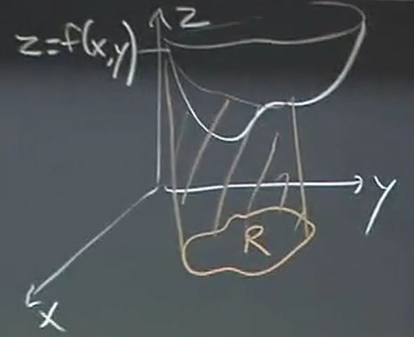
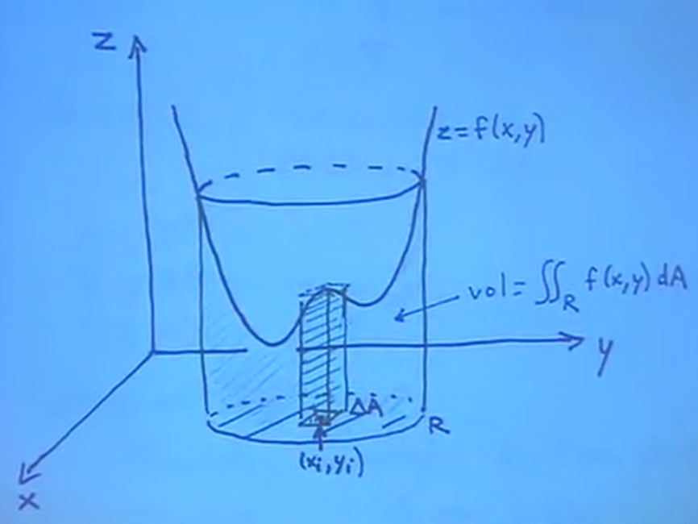
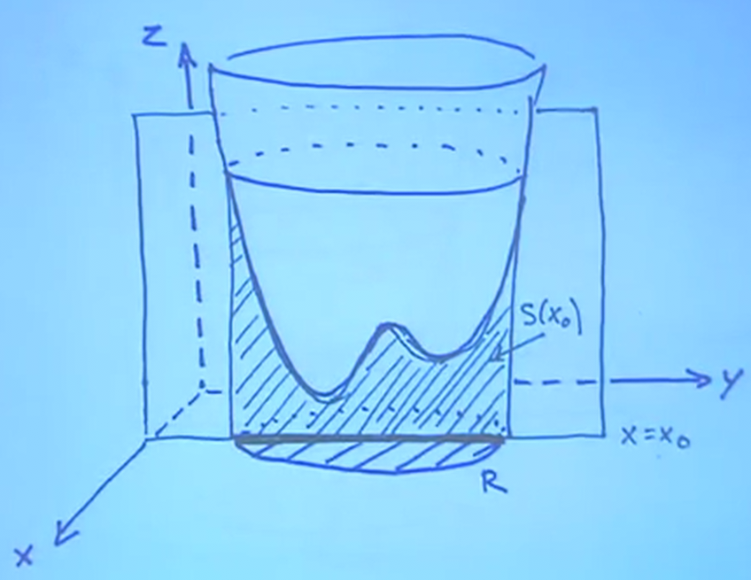
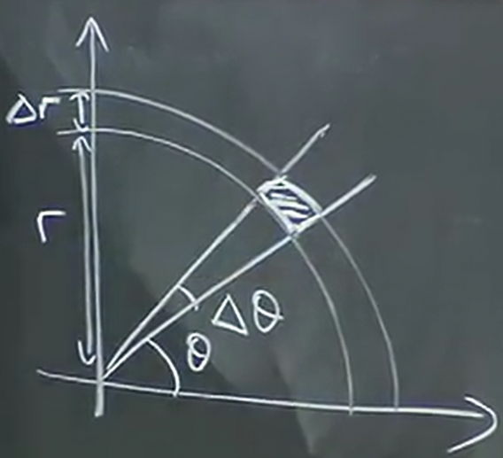

Double Integrals
Table of Contents
1. Intuition
Similar to how an integral in single-variable calculus is defined as the area underneath a curve, we can rouhgly define a double integral as the volume underneath a surface. In other words, the double integral of a function \(z=f(x,y)\) is such that we choose a region \(R\) in the \(xy\) plane and we compute the volume underneath the surface for the region \(R\):

We can write this as:
\[ \iint_{R} f(x,y) \text{ d}A \]
2. Definition
However, we need a more rigorous definition. Remember how we cut the area into small rectangles in order to calculate the integral for single-variable calculus. Similarly for double integrals, we can divide the volume up into small rectangular prisms, like so:

What this figure is showing is that we can take small areas \(\Delta A\) and multiply them with our function \(f\) to obtain the volumes of these small rectangular prisms. Then, adding all of these prisms together will give us an estimate of the total volume.
What the double integral does, then, is the limit as all of these rectangular prisms gets smaller and smaller, just like for single integrals. We can write this as:
\[ \lim_{\Delta A_i \to 0} {\sum_{i} f(x_i,y_i) \cdot \Delta A_i} \]
3. Computation
Computing double integrals actually involves reducing it to the computation of two single variable integrals. Realize that we can take a plane and "scan" from the back to the front; for each plane, the integral will give us the area underneath the curve for the surface intersected by that plane, and then the next integral will sum up all of these areas in turn:

In other words, we can let \(S(x)\) to be the area of each slice shown in the figure above. Then the volume of the region is:
\[ \iint_R f(x,y) \text{ d}A = \int_{x_\text{min}}^{x_\text{max}} S(x) \text{ d}x \]
Yet, \(S(x)\) itself is the integral in each plane:
\[ S(x) = \int_{y_\text{min}(x)}^{y_\text{max}(x)} f(x,y) \text{ d}y \]
Critically, remember that our bounds of integration here actually depend on what \(x\) we have. Putting these two equations together, we have that:
\[ \iint_R f(x,y) \text{ d}A = \int_{x_\text{min}}^{x_\text{max}} \int_{y_\text{min}(x)}^{y_\text{max}(x)} f(x,y) \text{ d}y \text{ d}x \]
We have now turned our double integral expression into what we call iterated integrals — reducing our calculation to the repeated application of two single integrals.
3.1. Exchanging the Order of Integration
Sometimes, it may be helpful to exchange the order of integration: instead of \(\text{d}y\text{ d}x\), we take \(\text{d}x\text{ d}y\) instead. To do this, however, we must be extremely careful about how we set up the bounds. In general, we need to draw a picture of our slices in order to understand the bounds going the other way.
4. Polar Coordinates
Sometimes, when we're working with things like circles, it might be easier to integrate instead in polar coordinates. Polar coordinates are defined by:
\begin{aligned} x = r\cos\theta \\ y = r\sin\theta \end{aligned}Instead of integrating \(\text{d}x\) and then \(\text{d}y\), we will instead integrate \(\text{d}r\) and then \(\text{d}\theta\). We will then represent the bounds of the integrals in terms of polar coordinates \((r,\theta)\). It is helpful to visualize as adding small increments \(\Delta r\) and \(\Delta \theta\), like so:

Now we want to represent the small change in area, \(\Delta A\), in terms of \(r\) and \(\theta\). First, realize that as the area gets smaller and smaller, we can approximate it into being a rectangle. One of the sides we know is \(\Delta r\). The other side corresponds to the arc length of a circle of radius \(r\) with arc angle \(\Delta \theta\), so the length is \(r \Delta \theta\). In other words, we can say that:
\[ \text{d}A = r \text{ d}r\text{ d}\theta \]
Therefore, to compute a double integral in polar coordinates, replace the bounds using \(r\) and \(\theta\), and replace \(\text{d}A\) with \(r \text{ d}r\text{ d}\theta\).
5. Applications
5.1. Mass
We can use double integrals to find the mass of a flat object by using the density \(\delta\), which is the mass per unit area. Then, we can integrate this over the flat region to find the mass like so:
\[ M = \iint_R \delta \text{ d}A \]
5.2. Continuous Average
We can define the average of \(f\) over a continuous region \(R\) as the double integral of \(f\) on \(R\) divided by the total area of \(R\):
\[ \bar{f} = \frac{1}{A} \iint_R f \text{ d}A \]
We can also calculate where the center of mass of a flat object is \((\bar{x},\bar{y})\) by using a weighted average with density function \(\delta\) and dividing by mass instead of area:
\begin{aligned} \bar{x} = \frac{1}{M} \iint_R x\delta \text{ d}A \\ \bar{y} = \frac{1}{M} \iint_R y\delta \text{ d}A \end{aligned}5.3. Moment of Inertia
The moment of inertia is to rotational motion as mass is to translational motion. In other words, mass determines how hard it is to impart translational motion on an object, and the moment of inertia is the same but for rotational motion about a certain axis.
To get the moment of inertia, first consider the kinetic energy. Given a velocity and mass of an object, we know the the kinetic energy is equal to \(\frac{1}{2}mv^2\). Now, consider a point mass of mass \(m\) at a distance \(r\) from the center of rotation, rotating at angular velocity \(\omega\). For unit time, the object rotates an angle of \(\omega\), and the distance it travels is given by the arc length formula \(r\omega\). Therefore, the velocity is \(r\omega\), so the kinetic energy is:
\[ \text{KE} = \frac{1}{2}mv^2 = \frac{1}{2}mr^2\omega^2 \]
Since \(\omega\) is to rotational motion what \(v\) is to translational motion, we take the expression \(mr^2\) above and call that the moment of inertia.
For objects that are more complicated than a point mass, we can calculate the moment of inertia around the origin using a double integral:
\[ I_0 = \iint_R r^2 \delta \text{ d}A \]